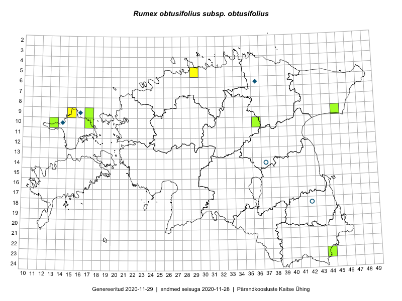

Rumex obtusifolius subsp. obtusifolius — narmasoblikas
Polygonaceae :: Rumex obtusifolius subsp. obtusifolius L. (11)

Kaart põhineb 11 kirjel:
vaatlusi 2
herbaareksemplare 9
Taime kaasaegsed ja ajaloolised leiukohad asuvad 9 ruudus.
Tingmärgid ja ruutude arvud periooditi (U1 / V2 )
█ 2006–2020 (5/–)
◆/◇ 1971–2005 (2/0)
○ 1921–1970 (2/0)
+ kuni 1920 (0/0)
× hävinud (–/0)
? kaheldav (–/0)
| Ruut | Leidja(d) | Leiuaeg | Kirje |
|---|---|---|---|
| 06-36 | L. Viljasoo, M. Abakumova | 1985-07-17 | ruut/ala: Rumex obtusifolius subsp. obtusifolius L. |
| 05-29 | Sander Laherand, Toomas Kukk | 2016-09-29 | ruut/ala: Rumex obtusifolius subsp. obtusifolius L. |
| 18-42 | A. Prii | 1955-07-04 | TAM0025964: Rumex obtusifolius subsp. obtusifolius L. |
| 18-42 | A. Prii | 1955-07-04 | TAM0025965: Rumex obtusifolius subsp. obtusifolius L. |
| 14-37 | E. Peikel | 1963-08-08 | TAM0025966: Rumex obtusifolius subsp. obtusifolius L. |
| 10-14 | Tõnu Ploompuu | 1995-07-22 | TALL C007036: Rumex obtusifolius subsp. obtusifolius L. |
| 09-45 | Peedu Saar, Liina Oja | 2015-07-24 | TAA0135408: Rumex obtusifolius subsp. obtusifolius L. |
| 23-44 | Peedu Saar, Karin Kikas | 2016-08-19 | TAA0133046: Rumex obtusifolius subsp. obtusifolius L. |
| 09-17 | Toomas Kukk, Eerik Leibak | 2015-08-12 | TAA0135495: Rumex obtusifolius subsp. obtusifolius L. |
| 10-13 | Sander Laherand, Nele Jõessar, Maret Gerz | 2016-08-10 | TAA0135800: Rumex obtusifolius subsp. obtusifolius L. |
| 09-17 | Ott Luuk, Peedu Saar | 2017-09-12 | TAA0142813: Rumex obtusifolius subsp. obtusifolius L. |
Ruutude arv uue atlase andmekogu järgi. Muuhulgas arvestab vanemat herbaariumi, 2005. aasta atlase välitöölehtedelt uuesti digitaliseeritud andmeid jne. Uue atlase andmekogust pärinevad andmed on kaardile kantud siniste sümbolitega.↩︎
Ruutude arv 2005. aasta atlase (Kukk, T., Kull, T., Eesti taimede levikuatlas. Eesti Maaülikool, Põllumajandus- ja Keskkonnainstituut, Tartu, 2005) järgi. Andmeallikana on kasutatud levik.exe programmi, kus igas ruudus on registreeritud vaid uusim leid. Seetõttu on vanemate perioodide kohta andmed puudulikud. Kasutatud levik.exe andmestikus leidub mõningaid kõrvalekaldeid atlase trükis ilmunud versioonist, sagedamini tarnade ja käpaliste seas. Lisaks leidub selles andmestikus valik liike (peamiselt väheste leidudega tulnuktaimed), mille kaarte trükis ei avaldatud. Vana atlase andmed ruutudest, milles ei ole uue atlase andmekogus leide enne 2006. aastat, on kaardil esitatud punaste sümbolitega. Vana atlase andmetel hävinud ja kaheldavaid leiukohti pole hilisemate (taas)leidude põhjal korrigeeritud.↩︎